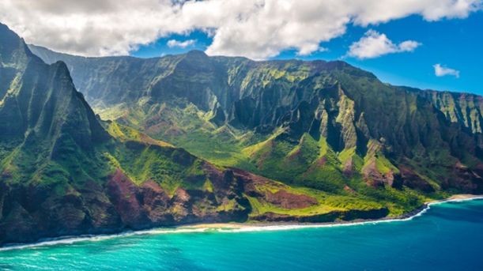

Aloha Maui

Jeśli marzysz o odpoczynku na czerwonych czy czarnych plażach, pływaniu pod wodospadami i oglądaniu wschodu słońca z wulkanu o wysokości 3000m wyspa Maui będzie dla ciebie rajem.9-dniowe wczasy w Kahului
Dzień pierwszy: Wylot z Warszawy do Los Angeles. Obiadokolacja. Nocleg w Los Angeles.
Dzień drugi: Śniadanie i wykwaterowanie z hotelu. Wylot z Los Angeles do Kahului (wyspa Maui). Przejazd do miejscowości
Ka’anapali. Zakwaterowanie w hotelu Honua Kai Resort & Spa. Obiadokolacja. Nocleg.
Dzień trzeci: Śniadanie. Przejazd do miejscowości Hana leżącej w części Maui, nad którą góruje wulkan Haleakala (przejazd najbardziej malowniczą trasą na Hawajach). W programie przejazdu: miasteczko surferów Paia, najsłynniejsza plaża windsurfingu - Ho’okipa, okazja do kąpieli na czarnej plaży Wai’anapanapa. Powrót do hotelu. Obiadokolacja, nocleg.
Dzień czwarty: Śniadanie. Przejazd do Parku Narodowego Haleakala, wizyta pośród Siedmiu Świętych Stawów, spacer na krater wulkanu. Możliwość wykupienia wycieczki helikopterem nad parkiem. Powrót do hotelu. Obiadokolacja, nocleg.
Dzień piąty, szósty, siódmy: Śniadanie. Pobyt na jednej z najpiękniejszych plaż wyspy Maui - Lahaina. Odpoczynek, możliwość nauki surfing i kitesurfingu. Powrót do hotelu. Obiadokolacja. Nocleg.
Dzień ósmy: Śniadanie. Spacer po miasteczku. Wykwaterowanie z hotelu. Przejazd na lotnisku. Wylot z Kahului do Los Angeles. Obiadokolacja. Nocleg w Los Angeles niedaleko lotniska.
Cena: 11 299,00 zł/ osobę
Cena zawiera: nocleg (6 w Ka’anapali + 2 w Los Angeles) , wyżywienie HB (śniadanie, obiadokolacja), transport, transfery lotnisko - hotel - lotnisko, ubezpieczenie NNW i KL, opiekę polskojęzycznego rezydenta.
Cena nie zawiera: wycieczki helikopterem, lekcji surfingu, wydatków osobistych.
Dostępne terminy:
Maj: 22-29
Czerwiec: 1-8, 16-23
Lipiec: 1-8, 9-16, 20-27
Sierpień: 2-9, 11-18, 20-27